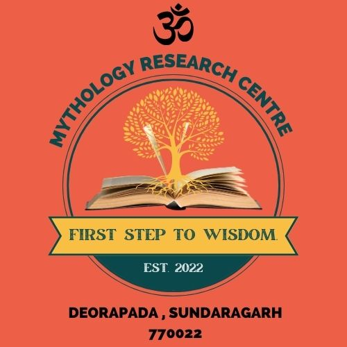

☼
ଦର୍ଶନ
ଶ୍ରୀରାମଙ୍କ ସମ୍ମୁଖରେ ପ୍ରାର୍ଥନା କରନ୍ତୁ ଓ କିଛି ଶାନ୍ତ ମୁହୂର୍ତ୍ତ ବିତାନ୍ତୁ।
ଶାନ୍ତିର ଏକ ମୁହୂର୍ତ୍ତ ↗
ଶ୍ରୀରାମଙ୍କ ଚରଣରେ ଆପଣଙ୍କୁ ସ୍ୱାଗତ
ଦେଓରାପଡ଼ାର ଏହି ପବିତ୍ର ସ୍ଥାନରେ ଟିକେ ରୁହନ୍ତୁ, ପ୍ରାର୍ଥନା କରନ୍ତୁ ଓ ଏକାଠି ହୁଅନ୍ତୁ। ଶ୍ରୀରାମଙ୍କ ଆଦର୍ଶ ଆମ ସମସ୍ତଙ୍କ ହୃଦୟରେ ଦୟା ଓ ସଦ୍ଭାବ ଜାଗ୍ରତ କରୁ।
ଯେମିତି ଅଛନ୍ତି ଆସନ୍ତୁ, ମନରେ ଟିକେ ଅଧିକ ଶାନ୍ତି ନେଇ ଫେରନ୍ତୁ।
ଦର୍ଶନ ବିଷୟରେ ↗ଦେଓରାପଡ଼ା ରାମ ମନ୍ଦିର ହେଉଛି ପ୍ରାର୍ଥନା, ଆତ୍ମଚିନ୍ତନ ଓ ଏକତାର ଏକ ପବିତ୍ର ସ୍ଥାନ। ଶ୍ରୀରାମଙ୍କ ନାମ ଆମକୁ ଭକ୍ତିରେ ଏକାଠି କରେ ଏବଂ ସାହସ, କରୁଣା ଓ ନମ୍ରତାର ସହ ଜୀବନ ବଞ୍ଚିବାକୁ ପ୍ରେରଣା ଦିଏ।
ଶାନ୍ତିର କିଛି ମୁହୂର୍ତ୍ତ, ଆରତି କିମ୍ବା ସାମୂହିକ ଉତ୍ସବ ପାଇଁ ଆସନ୍ତୁ—ଆପଣଙ୍କୁ ଏଠାରେ ସ୍ୱାଗତ।
ସେବାର ଭାବନା →ଜ୍ଞାନରୁ ସେବା, ସେବାରୁ ସମାଜ।
ଦୈନନ୍ଦିନ ବ୍ୟସ୍ତତାରୁ କିଛି ସମୟ ବାହାର କରି ପ୍ରାର୍ଥନାର ଶାନ୍ତି ଅନୁଭବ କରନ୍ତୁ।
ଶ୍ରୀରାମଙ୍କ ସମ୍ମୁଖରେ ପ୍ରାର୍ଥନା କରନ୍ତୁ ଓ କିଛି ଶାନ୍ତ ମୁହୂର୍ତ୍ତ ବିତାନ୍ତୁ।
ଶାନ୍ତିର ଏକ ମୁହୂର୍ତ୍ତ ↗ଭକ୍ତିପୂର୍ଣ୍ଣ ପ୍ରାର୍ଥନାରେ ଯୋଗ ଦିଅନ୍ତୁ ଓ ସମ୍ପ୍ରଦାୟ ସହ ଆରତିର ଆନନ୍ଦ ବାଣ୍ଟନ୍ତୁ।
ଏକାଠି ପ୍ରାର୍ଥନା ↗କୃତଜ୍ଞତାର ସହ ପ୍ରସାଦ ଗ୍ରହଣ କରନ୍ତୁ—ସାଙ୍ଗରେ ନେବାକୁ ଏକ ଛୋଟ ଆଶୀର୍ବାଦ।
ଶୁଭ ଆଶୀର୍ବାଦ ସହ ↗ⓘ ସନ୍ଧ୍ୟା ଆରତି: ସନ୍ଧ୍ୟା ୬ଟାରୁ ୭ଟା। ଅନ୍ୟ ଦର୍ଶନ ସମୟ ସ୍ଥାନୀୟ ଭାବେ ଜାଣିନିଅନ୍ତୁ।
ଯେଉଁଠି ଭକ୍ତି ଅଛି, ସେଇଠି ଶାନ୍ତିର ପଥ ଅଛି।
ପ୍ରତ୍ୟେକ ସହଯୋଗ ଆମ ମନ୍ଦିର ଓ ସମ୍ପ୍ରଦାୟକୁ ଆହୁରି ସୁଦୃଢ଼ କରେ। ନିଜ ସମୟ ଦିଅନ୍ତୁ, ଦକ୍ଷତା ବାଣ୍ଟନ୍ତୁ କିମ୍ବା ଉତ୍ସବରେ ସହଯୋଗ କରନ୍ତୁ—ପ୍ରତ୍ୟେକ ସେବା ମୂଲ୍ୟବାନ।
ସେବା ବିଷୟରେ ପଚାରନ୍ତୁ →ଯାତ୍ରା ଆରମ୍ଭ ପୂର୍ବରୁ ସ୍ଥାନୀୟ ରାସ୍ତା ଜାଣିନିଅନ୍ତୁ।
ସନ୍ଧ୍ୟା ଆରତି: ସନ୍ଧ୍ୟା ୬ଟାରୁ ୭ଟା ପର୍ଯ୍ୟନ୍ତ। ଅନ୍ୟ ସମୟ ପାଇଁ ମନ୍ଦିର କମିଟିଠାରୁ ଜାଣିନିଅନ୍ତୁ।
ଦାନ କିମ୍ବା ମନ୍ଦିର ସମ୍ବନ୍ଧୀୟ ସୂଚନା ପାଇଁ ଏହି ନମ୍ବରରେ ଯୋଗାଯୋଗ କରନ୍ତୁ।